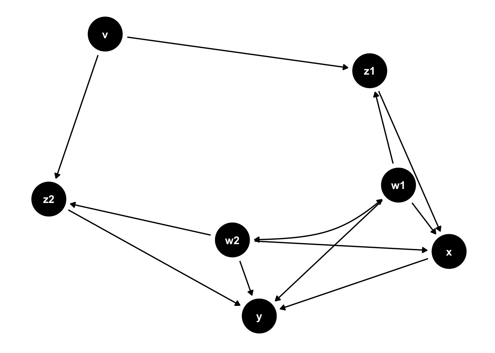

remotes::install_github("GuangchuangYu/hexSticker")package
library(hexSticker)
library(ggplot2)
library(ggdag)
다음의 패키지를 부착합니다: 'ggdag'The following object is masked from 'package:stats':
filterlibrary(magick)Linking to ImageMagick 6.9.12.3
Enabled features: cairo, fontconfig, freetype, heic, lcms, pango, raw, rsvg, webp
Disabled features: fftw, ghostscript, x11hexSticker는 R 패키지 로고를 쉽게 만들어주는 패키지이다. 육각형 패키지 로고 안에 글씨, 이미지, url 등을 넣을 수 있으며, 색, 글씨체, 글씨크기, 배경 색, 밝기 등 다양한 커스텀이 가능하다.
package logo에 넣을 graph 만들기
ggplot2 base의 그래프의 경우 별도의 이미지 저장 없이 hexSticker에서 사용이 가능하다. ggplot base가 아닐 경우 이미지로 저장한 뒤 불러와서 사용해야 한다.
ggdag()는 ggplot base인 것처럼 보이지만 hexSticker에서 ggplot base로 인식을 안하기 때문에 별도의 이미지로 저장해서 사용해야 한다.
tidy_ggdag <- dagify(
y ~ x + z2 + w2 + w1,
x ~ z1 + w1 + w2,
z1 ~ w1 + v,
z2 ~ w2 + v,
w1 ~~ w2, # bidirected path
exposure = "x",
outcome = "y"
) %>%
tidy_dagitty()
tidy_ggdag# A DAG with 7 nodes and 12 edges
#
# Exposure: x
# Outcome: y
#
# A tibble: 13 × 8
name x y direction to xend yend circular
<chr> <dbl> <dbl> <fct> <chr> <dbl> <dbl> <lgl>
1 v -2.45 1.20 -> z1 -3.16 2.42 FALSE
2 v -2.45 1.20 -> z2 -3.68 0.487 FALSE
3 w1 -4.10 2.07 -> x -4.64 2.40 FALSE
4 w1 -4.10 2.07 -> y -4.39 1.16 FALSE
5 w1 -4.10 2.07 -> z1 -3.16 2.42 FALSE
6 w1 -4.10 2.07 <-> w2 -4.99 1.29 FALSE
7 w2 -4.99 1.29 -> x -4.64 2.40 FALSE
8 w2 -4.99 1.29 -> y -4.39 1.16 FALSE
9 w2 -4.99 1.29 -> z2 -3.68 0.487 FALSE
10 x -4.64 2.40 -> y -4.39 1.16 FALSE
11 z1 -3.16 2.42 -> x -4.64 2.40 FALSE
12 z2 -3.68 0.487 -> y -4.39 1.16 FALSE
13 y -4.39 1.16 <NA> <NA> NA NA FALSE ggdag(tidy_ggdag) +
theme_dag()
저장된 이미지를 불러올 경우 magick 패키지의 image_read()를 이용할 수 있다.
img <- image_read('Rplot.png')
img불러온 이미지는 hexSticker의 sticker() 함수를 이용하면 간단하게 패키지 로고를 만들 수 있다. 여러가지 옵션이 있는데, 기호에 맞게 커스텀해서 이용하면 된다.
sticker(subplot = img, # 저장된 image 불러오기
package = "causal inference", # 패키지로 사용할 명칭
s_width = 0.9, # subplot width
s_height = 1, # subplot height
s_x = 1, # subplot left/right position
s_y = 0.75, # subplot up/down position
p_size = 18, # package name font size
h_fill = 'steelblue', #
h_color = 'orange',
h_size = 4, # boundary size
url = "https://pseudolabcausalinference.tistory.com",
u_size = 4, # url size
spotlight = T, # spotlight 넣기
l_y = 1, # spotlight y-position
l_x = 1, # spotlight x-position
l_width = 3, # spotlight width
l_height = 3, # spotlight height
l_alpha = 0.3, # splotlight level
u_color = 'white'
#filename="logo.png"
)%>%
print()